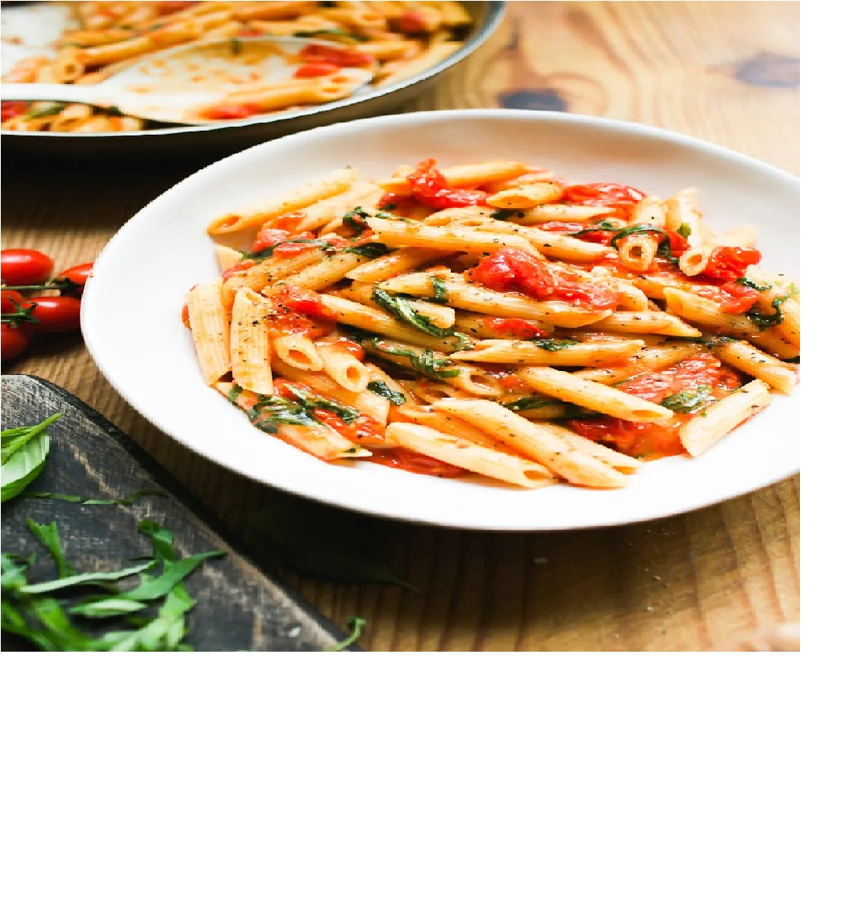

Tomato Basil Pasta

Ingredients
- 8 oz pasta (penne or spaghetti)
- 2 tablespoons olive oil
- 3 cloves garlic, minced
- 1 can (14.5 oz) diced tomatoes
- 1/2 cup fresh basil leaves, chopped
- Salt and pepper to taste
Step-by-Step Instructions
- Bring a large pot of salted water to a boil. Add the pasta and cook until al dente.
- While the pasta cooks, heat olive oil in a large skillet over medium heat.
- Add minced garlic to the skillet and sauté for about 1 minute until fragrant.
- Stir in the diced tomatoes and let the sauce simmer for 10 minutes.
- Drain the cooked pasta and add it directly to the skillet with the tomato sauce.
- Toss everything together, season with salt and pepper, and top with fresh basil.